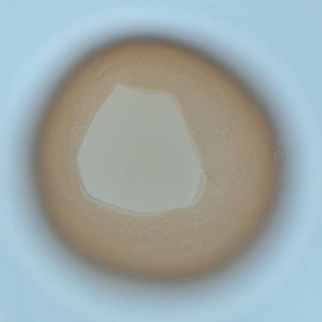

CYSTS LIST
cysts of PROTOPERIDINIUM
The genus Protoperidinium was classified within the family Protoperidiniaceae together with the diplopsalioideans (Fensome et al., 1993, 1998). Protoperidinium is not monophyletic because its species fall within three clades, i.e. Protoperidinium sensu stricto, the section Oceanica, and the section Monovela, which are intermingled by species of the diplopsalioideans and the benthic species Herdmania litoralis J.D. Dodge (Yamaguchi et al. 2011; Matsuoka & Kawami 2013; Mertens et al. 2013; Liu et al. 2014).
The genus Protoperidinium is characterized by possessing three cingular plates plus a transitional plate (Balech 1974) and currently includes around 280 heterotrophic species (Gómez 2012). Identification of the thecate stage of Protoperidinium species is based on the size, shape, presence of apical and/or antapical horns/spines, cingulum displacement and particularly the plate pattern (e.g. Hoppenrath et al. 2009).
Many Protoperidinium species can produce resting cysts, which are diverse in morphology and can be taxonomically informative, especially the shape of the archeopyle (Harland 1982). Archaeperidinium has a theropylic 2a archeopyle (Ribeiro et al. 2010; Mertens et al. 2012) whereas typical Protoperidinium species have saphopylic 2a archeopyles (Harland 1982).
[Liu et al. 2015]
Surface |
Shape |
Remarks |
Species |
Central body (um.) |
Process (um.) |
Image |
Double wallThin solid inner layer, and granular outer layerBrown |
Spherical |
Larger diameter and separation of epicyst/hypocyst |
Protoperidiniumamericanum | 34 to 52 (D) |
- |
|
SmoothDark brown when empty |
Biconical in apical view |
Larger diameter and separation of epicyst/hypocyst |
Protoperidiniumconicoides | 60 to 75 (L)75 to 90 (W) |
- |
 |